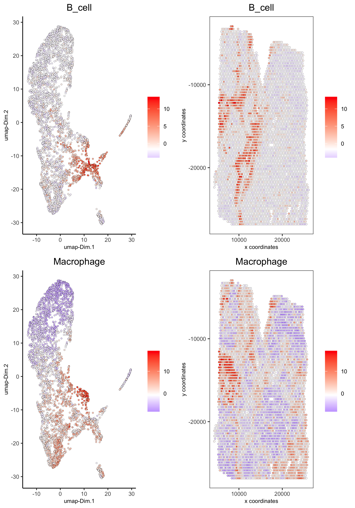

Visium CytAssist Human Lung Cancer
Source:vignettes/visium_cytassist_lungcancer.Rmd
visium_cytassist_lungcancer.RmdDataset Explanation
The human lung cancer (FFPE) dataset was obtained from 10x Genomics using their CytAssist Visium technology that has been recently developed to allow users to perform standard histology workflows on two standard glass slides before transferring the transcriptional probes on the two-area capture visium slide.
More information about this dataset can be found here.
Start Giotto
To run the current vignette you need to install the Giotto Suite branch.
# Ensure Giotto Suite and GiottoData packages are installed
if(!"Giotto" %in% installed.packages()) {
devtools::install_github("drieslab/Giotto@suite")
}
if(!"Giotto" %in% installed.packages()) {
devtools::install_github("drieslab/GiottoData")
}
library(Giotto)
library(GiottoData)
# Ensure the Python environment for Giotto has been installed
genv_exists = checkGiottoEnvironment()
if(!genv_exists){
# The following command need only be run once to install the Giotto environment.
installGiottoEnvironment()
}
# to automatically save figures in save_dir set save_plot to TRUE
temp_dir = getwd()
myinstructions = createGiottoInstructions(save_dir = temp_dir,
save_plot = TRUE,
show_plot = TRUE)1. Create a Giotto object
The minimum requirements are
- matrix with expression information (or path to)
- x,y(,z) coordinates for cells or spots (or path to)
# Provide path to visium folder
data_path = paste0(temp_dir, '/data/')
getSpatialDataset(dataset = 'cytassist_lungcancer', directory = data_path, method = 'wget')
# Create Giotto object
visium_lungcancer = createGiottoVisiumObject(visium_dir = data_path,
expr_data = 'raw',
png_name = 'tissue_lowres_image.png',
gene_column_index = 2,
instructions = myinstructions)
# check metadata
pDataDT(visium_lungcancer)
# check available image names
showGiottoImageNames(visium_lungcancer) # "image" is the default name
# show aligned image
spatPlot(gobject = visium_lungcancer, cell_color = 'in_tissue', show_image = T, point_alpha = 0.7)
How to work with Giotto instructions that are part of your Giotto object:
- show the instructions associated with your Giotto object with showGiottoInstructions()
- change one or more instructions with changeGiottoInstructions()
- replace all instructions at once with replaceGiottoInstructions()
- read or get a specific Giotto instruction with readGiottoInstructions()
# show instructions associated with giotto object (visium_lungcancer)
showGiottoInstructions(visium_lungcancer)2. Processing steps
- filter genes and cells based on detection frequencies
- normalize expression matrix (log transformation, scaling factor and/or z-scores)
- add cell and gene statistics (optional)
- adjust expression matrix for technical covariates or batches (optional). These results will be stored in the custom slot.
visium_lungcancer <- filterGiotto(gobject = visium_lungcancer,
expression_threshold = 1,
feat_det_in_min_cells = 50,
min_det_feats_per_cell = 1000,
expression_values = c('raw'),
verbose = T)
visium_lungcancer <- normalizeGiotto(gobject = visium_lungcancer, scalefactor = 6000, verbose = T)
visium_lungcancer <- addStatistics(gobject = visium_lungcancer)Visualize aligned tissue with number of features after processing
spatPlot2D(gobject = visium_lungcancer, show_image = T, point_alpha = 0.7)
spatPlot2D(gobject = visium_lungcancer, show_image = T, point_alpha = 0.7,
cell_color = 'nr_feats', color_as_factor = F)
3. Dimension Reduction
- identify highly variable features (HVF)
visium_lungcancer <- calculateHVF(gobject = visium_lungcancer)- perform PCA
- identify number of significant principal components (PCs)
plotPCA(gobject = visium_lungcancer)- run UMAP and/or t-SNE on PCs (or directly on matrix)
4. Clustering
- create a shared (default) nearest network in PCA space (or directly on matrix)
- cluster on nearest network with Leiden or Louvain (k-means and hclust are alternatives)
# Create shared nearest network (SNN) and perform leiden clustering
visium_lungcancer <- createNearestNetwork(gobject = visium_lungcancer, dimensions_to_use = 1:10, k = 30)
visium_lungcancer <- doLeidenCluster(gobject = visium_lungcancer, spat_unit = 'cell', feat_type = 'rna', resolution = 0.4, n_iterations = 1000)
# visualize UMAP cluster results
plotUMAP(gobject = visium_lungcancer, cell_color = 'leiden_clus', show_NN_network = T, point_size = 2)
# visualize tSNE cluster results
plotTSNE(gobject = visium_lungcancer, cell_color = 'leiden_clus', show_NN_network = T, point_size = 2)
# visualize expression and spatial results
spatDimPlot(gobject = visium_lungcancer, cell_color = 'leiden_clus',
dim_point_size = 2, spat_point_size = 2)
spatDimPlot(gobject = visium_lungcancer, cell_color = 'nr_feats', color_as_factor = F,
dim_point_size = 2, dim_show_legend = T, spat_show_legend = T, spat_point_size = 2)5. Differential expression
# Cell type marker detection
# Gini markers
gini_markers_subclusters = findMarkers_one_vs_all(gobject = visium_lungcancer,
method = 'gini',
expression_values = 'normalized',
cluster_column = 'leiden_clus',
min_featss = 20,
min_expr_gini_score = 0.5,
min_det_gini_score = 0.5)
# get top 2 genes per cluster and visualize with violin plot
topgenes_gini = gini_markers_subclusters[, head(.SD, 2), by = 'cluster']$feats
violinPlot(visium_lungcancer, feats = unique(topgenes_gini), cluster_column = 'leiden_clus',
strip_text = 8, strip_position = 'right')
# cluster heatmap
plotMetaDataHeatmap(visium_lungcancer,
selected_feats = topgenes_gini,
metadata_cols = c('leiden_clus'),
x_text_size = 10, y_text_size = 10)
# umap plots
dimFeatPlot2D(visium_lungcancer,
expression_values = 'scaled',
feats = gini_markers_subclusters[, head(.SD, 1), by = 'cluster']$feats,
cow_n_col = 3, point_size = 1)
# Cell type marker detection
# Scran markers
scran_markers_subclusters = findMarkers_one_vs_all(gobject = visium_lungcancer,
method = 'scran',
expression_values = 'normalized',
cluster_column = 'leiden_clus')
# get top 2 genes per cluster and visualize with violin plot
topgenes_scran = scran_markers_subclusters[, head(.SD, 2), by = 'cluster']$feats
violinPlot(visium_lungcancer, feats = unique(topgenes_scran),
cluster_column = 'leiden_clus',
strip_text = 10, strip_position = 'right')
# cluster heatmap
plotMetaDataHeatmap(visium_lungcancer,
selected_feats = topgenes_scran,
metadata_cols = c('leiden_clus'),
x_text_size = 10, y_text_size = 10)
# umap plots
dimFeatPlot2D(visium_lungcancer,
expression_values = 'scaled',
feats = scran_markers_subclusters[, head(.SD, 1), by = 'cluster']$feats,
cow_n_col = 3, point_size = 1)6. Cell Type Enrichment
Visium spatial transcriptomics does not provide single-cell resolution, making cell type annotation a harder problem. Giotto provides several ways to calculate enrichment of specific cell-type signature gene lists:
- PAGE
- hypergeometric test
- Rank
- DWLS
Deconvolution Corresponded Single cell dataset can be generated from here. Giotto_SC is processed from the downsampled Loom file and can also be downloaded from getSpatialDataset.
PAGE
The cell-type specific signature gene list was obtained from a previous study focused on investigating the therapy-induced evolution of lung cancer revealed by single-cell RNA sequencing. More information about the paper and scRNA-seq dataset can be found here.
# umap plots
# Create PAGE matrix
# PAGE matrix should be a binary matrix with each row represent a gene marker and each column represent a cell type
# There are several ways to create PAGE matrix
# 1.1 create binary matrix of cell signature genes
# small example #
Tcells_markers = c("CD2", "CD3D", "CD3E", "CD3G")
macrophage_markers = c("MARCO", "CSF1R", "CD68", "GLDN", "APOE", "CCL3L1", "TREM2", "C1QB", "NUPR1", "FOLR2", "RNASE1", "C1QA")
dendritic_markers = c("CD1E", "CD1C", "FCER1A", "PKIB", "CYP2S1", "NDRG2")
mast_markers = c("CMA1", "TPSAB1", "TPSB2")
Bcell_markers = c("IGLL5", "MZB1", "JCHAIN", "DERL3", "SDC1", "MS$A1", "BANK1", "PAX5", "CD79A")
Bcell_PB_markers = c("PRDM1", "XSP1", "IRF4")
Bcell_mem_markers = c("MS4A1", "IRF8")
housekeeping_markers = c("ACTB", "GAPDH", "MALAT1")
neutrophils_markers = c("FCGR3B", "ALPL", "CXCR1", "CXCR2", "ADGRG3", "CMTM2", "PROK2", "MME", "MMP25", "TNFRSF10C")
pdcs_markers = c("SLC32A1", "SHD", "LRRC26", "PACSIN1", "LILRA4", "CLEC4C", "DNASE1L3", "SCT", "LAMP5")
signature_matrix = makeSignMatrixPAGE(sign_names = c('T_Cells', 'Macrophage', 'Dendritic', 'Mast', 'B_cell', 'Bcell_PB', 'Bcells_memory',
'Housekeeping', 'Neutrophils', 'pDCs'),
sign_list = list(Tcells_markers,
macrophage_markers,
dendritic_markers,
mast_markers,
Bcell_markers,
Bcell_PB_markers,
Bcell_mem_markers,
housekeeping_markers,
neutrophils_markers,
pdcs_markers))
# 1.3 enrichment test with PAGE
markers_scran = findMarkers_one_vs_all(gobject=giotto_SC, method="scran",
expression_values="normalized", cluster_column = "Class", min_feats=3)
top_markers <- markers_scran[, head(.SD, 10), by="cluster"]
celltypes<-levels(factor(markers_scran$cluster))
sign_list<-list()
for (i in 1:length(celltypes)){
sign_list[[i]]<-top_markers[which(top_markers$cluster == celltypes[i]),]$feats
}
PAGE_matrix_3 = makeSignMatrixPAGE(sign_names = celltypes,
sign_list = sign_list)
# runSpatialEnrich() can also be used as a wrapper for all currently provided enrichment options
visium_lungcancer = runPAGEEnrich(gobject = visium_lungcancer, sign_matrix = signature_matrix, min_overlap_genes = 1)
# 1.4 heatmap of enrichment versus annotation (e.g. clustering result)
cell_types = colnames(signature_matrix)
plotMetaDataCellsHeatmap(gobject = visium_lungcancer,
metadata_cols = 'leiden_clus',
value_cols = cell_types,
spat_enr_names = 'PAGE',
x_text_size = 8,
y_text_size = 8,
show_plot = T,
save_param = list(save_name="7_a_metaheatmap"))
cell_types_subset = colnames(signature_matrix)
spatCellPlot(gobject = visium_lungcancer,
spat_enr_names = 'PAGE',
cell_annotation_values = cell_types_subset,
cow_n_col = 4, coord_fix_ratio = NULL, point_size = 0.75,
save_param = list(save_name="7_b_spatcellplot_1"))
spatDimCellPlot(gobject = visium_lungcancer,
spat_enr_names = 'PAGE',
cell_annotation_values = c('B_cell','Macrophage'),
cow_n_col = 1, spat_point_size = 1.2,
plot_alignment = 'horizontal',
save_param = list(save_name="7_d_spatDimCellPlot", base_width=7, base_height=10))
7. Spatial Grids
visium_lungcancer <- createSpatialGrid(gobject = visium_lungcancer,
sdimx_stepsize = 400,
sdimy_stepsize = 400,
minimum_padding = 0)
spatPlot(visium_lungcancer, cell_color = 'leiden_clus', point_size = 2.5, show_grid = T,
grid_color = 'red', spatial_grid_name = 'spatial_grid')8. Spatial Network
## Delaunay network: stats + creation
plotStatDelaunayNetwork(gobject = visium_lungcancer, maximum_distance = 400)
visium_lungcancer = createSpatialNetwork(gobject = visium_lungcancer, minimum_k = 0)
showNetworks(visium_lungcancer)
spatPlot(gobject = visium_lungcancer, show_network = T,
network_color = 'blue', spatial_network_name = 'Delaunay_network')9. Spatial Genes
# kmeans binarization
kmtest = binSpect(visium_lungcancer)
spatFeatPlot2D(visium_lungcancer, expression_values = 'scaled',
feats = kmtest$feats[1:6], cow_n_col = 2, point_size = 1.5)
## rank binarization
ranktest = binSpect(visium_lungcancer, bin_method = 'rank')
spatFeatPlot2D(visium_lungcancer, expression_values = 'scaled',
feats = ranktest$feats[1:6], cow_n_col = 2, point_size = 1.5)
## spatially correlated genes ##
ext_spatial_genes = kmtest[1:500]$feats
# 1. calculate gene spatial correlation and single-cell correlation
# create spatial correlation object
spat_cor_netw_DT = detectSpatialCorFeats(visium_lungcancer,
method = 'network',
spatial_network_name = 'Delaunay_network',
subset_feats = ext_spatial_genes)
# 2. identify most similar spatially correlated genes for one gene
DNAI1_top10_genes = showSpatialCorFeats(spat_cor_netw_DT, feats = 'DNAI1', show_top_feats = 10)
spatFeatPlot2D(visium_lungcancer, expression_values = 'scaled',
feats = c('RSPH1', 'C20orf85', 'DNAAF1','TEKT2'), point_size = 3)
spatFeatPlot2D(visium_lungcancer, expression_values = 'scaled',
feats = c('TEKT2', 'CFAP157', 'MAPK15', 'MS4A8', 'CDHR3', 'C9orf24'), point_size = 3)
# 3. cluster correlated genes & visualize
spat_cor_netw_DT = clusterSpatialCorFeats(spat_cor_netw_DT, name = ‘spat_netw_clus’, k = 10)
heatmSpatialCorFeats(visium_lungcancer, spatCorObject = spat_cor_netw_DT, use_clus_name = ‘spat_netw_clus’,
save_param = c(save_name = ‘22-z1-heatmap_correlated_genes’, save_format = ‘pdf’, base_height = 6, base_width = 8, units = ‘cm’), heatmap_legend_param = list(title = NULL))
# 4. rank spatial correlated clusters and show genes for selected clusters
netw_ranks = rankSpatialCorGroups(visium_lungcancer,
spatCorObject = spat_cor_netw_DT,
use_clus_name = 'spat_netw_clus',
save_param = c(save_name = '22-z2-rank_correlated_groups',
base_height = 3, base_width = 5))
top_netw_spat_cluster = showSpatialCorFeats(spat_cor_netw_DT, use_clus_name = 'spat_netw_clus',
selected_clusters = 6, show_top_feats = 1)
# 5. create metagene enrichment score for clusters
cluster_genes_DT = showSpatialCorFeats(spat_cor_netw_DT, use_clus_name = 'spat_netw_clus', show_top_feats = 1)
cluster_genes = cluster_genes_DT$clus; names(cluster_genes) = cluster_genes_DT$feat_ID
visium_lungcancer = createMetafeats(visium_lungcancer, feat_clusters = cluster_genes, name = 'cluster_metagene')
showGiottoSpatEnrichments(visium_lungcancer)
spatCellPlot(visium_lungcancer,
spat_enr_names = 'cluster_metagene',
cell_annotation_values = netw_ranks$clusters,
point_size = 1.5, cow_n_col = 4)10. HMRF Domains
# HMRF requires a fully connected network!
visium_lungcancer = createSpatialNetwork(gobject = visium_lungcancer, minimum_k = 2, name = 'Delaunay_full')
# spatial genes
my_spatial_genes <- kmtest[1:100]$feats
# do HMRF with different betas
hmrf_folder = paste0(results_folder,'/','HMRF_results/')
if(!file.exists(hmrf_folder)) dir.create(hmrf_folder, recursive = T)
# if Rscript is not found, you might have to create a symbolic link, e.g.
# cd /usr/local/bin
# sudo ln -s /Library/Frameworks/R.framework/Resources/Rscript Rscript
HMRF_spatial_genes = doHMRF(gobject = visium_lungcancer,
expression_values = 'scaled',
spatial_network_name = 'Delaunay_full',
spatial_genes = my_spatial_genes,
k = 5,
betas = c(0, 10, 3),
output_folder = paste0(hmrf_folder, '/', 'Spatial_genes/SG_topgenes_k5_scaled'))
## alternative way to view HMRF results
# results = writeHMRFresults(gobject = ST_test,
# HMRFoutput = HMRF_spatial_genes,
# k = 5, betas_to_view = seq(0, 25, by = 5))
# ST_test = addCellMetadata(ST_test, new_metadata = results, by_column = T, column_cell_ID = 'cell_ID')
## add HMRF of interest to giotto object
visium_lungcancer = addHMRF(gobject = visium_lungcancer,
HMRFoutput = HMRF_spatial_genes,
k = 5, betas_to_add = c(0,10,20),
hmrf_name = 'HMRF')
showGiottoSpatEnrichments(visium_lungcancer)
## visualize
spatPlot(gobject = visium_lungcancer, cell_color = 'HMRF_k5_b.0', point_size = 3)
spatPlot(gobject = visium_lungcancer, cell_color = 'HMRF_k5_b.10', point_size = 3)
sessionInfo()
R version 4.2.2 (2022-10-31)
Platform: aarch64-apple-darwin20 (64-bit)
Running under: macOS Monterey 12.5.1
Matrix products: default
LAPACK: /Library/Frameworks/R.framework/Versions/4.2-arm64/Resources/lib/libRlapack.dylib
locale:
[1] en_US.UTF-8/en_US.UTF-8/en_US.UTF-8/C/en_US.UTF-8/en_US.UTF-8
attached base packages:
[1] stats graphics grDevices utils datasets methods base
other attached packages:
[1] Giotto_3.0.1
loaded via a namespace (and not attached):
[1] bitops_1.0-7 matrixStats_0.63.0 fs_1.5.2
[4] usethis_2.1.6 devtools_2.4.5 GenomeInfoDb_1.34.3
[7] tools_4.2.2 profvis_0.3.7 utf8_1.2.2
[10] R6_2.5.1 irlba_2.3.5.1 BiocGenerics_0.44.0
[13] colorspace_2.0-3 urlchecker_1.0.1 tidyselect_1.2.0
[16] prettyunits_1.1.1 processx_3.8.0 compiler_4.2.2
[19] cli_3.4.1 Biobase_2.58.0 BiocNeighbors_1.16.0
[22] DelayedArray_0.24.0 scales_1.2.1 callr_3.7.3
[25] stringr_1.4.1 digest_0.6.30 XVector_0.38.0
[28] pkgconfig_2.0.3 htmltools_0.5.3 sessioninfo_1.2.2
[31] sparseMatrixStats_1.10.0 MatrixGenerics_1.10.0 fastmap_1.1.0
[34] limma_3.54.0 htmlwidgets_1.5.4 rlang_1.0.6
[37] rstudioapi_0.14 shiny_1.7.3 DelayedMatrixStats_1.20.0
[40] generics_0.1.3 BiocParallel_1.32.1 dplyr_1.0.10
[43] RCurl_1.98-1.9 magrittr_2.0.3 BiocSingular_1.14.0
[46] GenomeInfoDbData_1.2.9 Matrix_1.5-3 Rcpp_1.0.9
[49] munsell_0.5.0 S4Vectors_0.36.0 fansi_1.0.3
[52] lifecycle_1.0.3 stringi_1.7.8 SummarizedExperiment_1.28.0
[55] zlibbioc_1.44.0 pkgbuild_1.3.1 grid_4.2.2
[58] parallel_4.2.2 promises_1.2.0.1 dqrng_0.3.0
[61] crayon_1.5.2 miniUI_0.1.1.1 lattice_0.20-45
[64] beachmat_2.14.0 locfit_1.5-9.6 ps_1.7.2
[67] pillar_1.8.1 igraph_1.3.5 GenomicRanges_1.50.1
[70] codetools_0.2-18 ScaledMatrix_1.6.0 stats4_4.2.2
[73] pkgload_1.3.2 glue_1.6.2 data.table_1.14.6
[76] remotes_2.4.2 BiocManager_1.30.19 vctrs_0.5.1
[79] httpuv_1.6.6 gtable_0.3.1 purrr_0.3.5
[82] cachem_1.0.6 ggplot2_3.4.0 rsvd_1.0.5
[85] mime_0.12 xtable_1.8-4 later_1.3.0
[88] SingleCellExperiment_1.20.0 tibble_3.1.8 memoise_2.0.1
[91] IRanges_2.32.0 cluster_2.1.4 bluster_1.8.0
[94] ellipsis_0.3.2